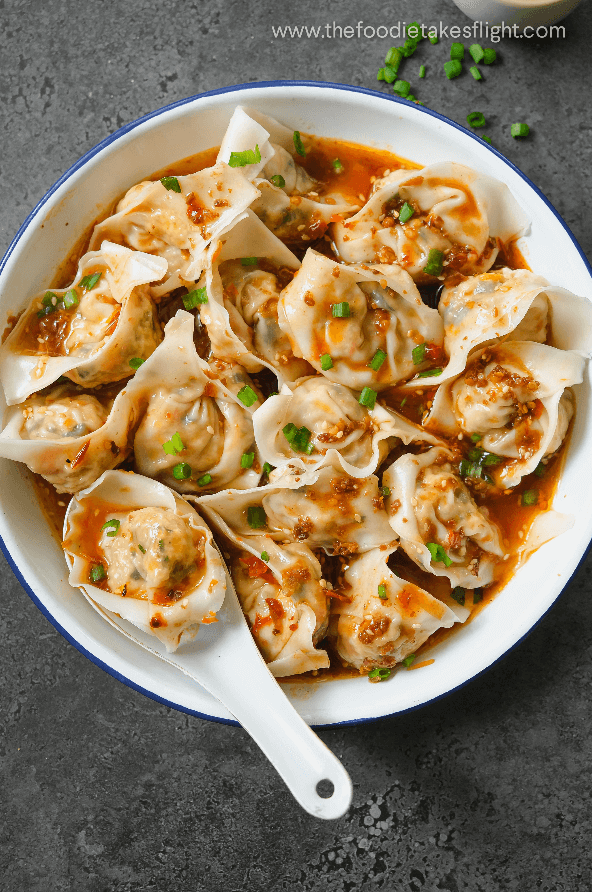

Vegan Tofu and Garlic Chive Wontons in Chili Broth
from The Foodie Takes Flight

Description
These are hand-folded vegan wontons in a spicy and savory chili broth.
The filling consists of seasoned firm tofu and garlic chives, known as
"nira" in Japanese. This is a great dish to make while listening to a podcast
and to enjoy in front of whatever show you are currently binging.
Ingredients
Wontons
- 450g extra firm tofu
- 2 cloves of garlic, minced
- Chopped garlic chives to taste (I use about 1 "bundle")
- 2 tbsp soy sauce
- 1 tsp white pepper
- Half a packet of kombu dashi powder
- 1 tbsp corn starch
- Safflower oil (or any other neutral oil)
- Wonton wrappers
Chili broth
- Hot water as needed
- 1/2 tbsp soy sauce
- 1 tbsp rayu (garlic chili oil)
- 1 tsp gochujang
- 1 tbsp rice vinegar
- 1 tsp sesame seeds
- 1 tsp sesame oil
Steps
- Remove wonton wrappers from the fridge and allow to warm up
to room temperature while preparing the filling.
- Heat up neutral oil in a pan and add chopped garlic chives.
- After about 30 seconds, crumble the tofu with your hands and add to the pan
along with the remaining wonton ingredients (except for the wrappers of course and the
corn starch).
- Cook until water is gone and mix in corn starch. Allow to cool down.
- Fold wontons until you have made the amount that you intend to serve immediately
or until you have run out of filling or wrappers - whichever comes first.
- Boil wontons in hot water until they become transluscent and float.
- Transfer wontons to a serving bowl. Mix chili broth ingredients and
pour over the wontons and enjoy!